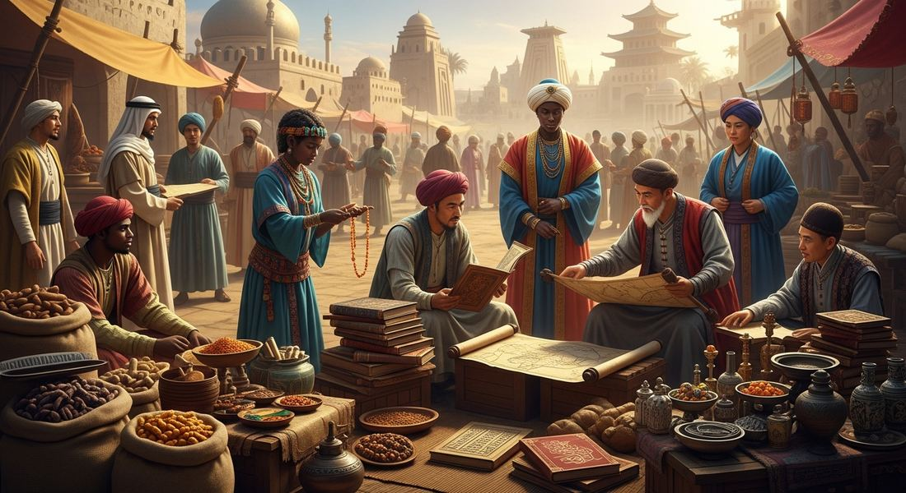

2.5 Cultural Consequences of Connectivity
- LO-A: LO: How trade networks caused the spread of religions, languages, and cultural practices: Religion followed commerce, not conquest (in most cases): Buddhism spread along the Silk Roads via merchants and monks who built monasteries at caravan rest stops; Islam spread along Indian Ocean and trans-Saharan routes via Muslim merchants who settled in port cities and built mosques. Languages traveled with trade: Arabic became the commercial lingua franca of Indian Ocean commerce. Technologies moved as unintended cargo: the Hindu-Arabic numeral system traveled from India through Arab merchant networks to Europe, where it made modern mathematics possible. Nobody planned these transfers. They happened because merchants moved.
- LO-B: Explain the significance of diasporic communities in sustaining…: LO: Significance of diasporic communities in sustaining long-distance exchange: Diasporic communities. Arab, Indian, Chinese, Jewish, and Venetian merchants who settled permanently in foreign port cities, were the human infrastructure that made intercontinental trade possible. They maintained the commercial relationships, language skills, credit networks, and legal knowledge that allowed strangers from different cultures to conduct reliable transactions across thousands of miles. Without permanent diaspora communities to bridge cultural gaps, each transaction would require rebuilding trust and legal frameworks from scratch. They also created the sustained cultural contact that produced syncretism: you cannot blend cultures without people who live between them.
- LO-C: Explain cultural syncretism as a consequence of cross-cultural…: LO: Cultural syncretism as a consequence of cross-cultural contact: Syncretism means genuine blending, not replacement: when two cultures meet through sustained trade contact, a new hybrid emerges that belongs fully to neither parent. Key AP examples: Swahili culture (Bantu African grammar + Arabic vocabulary + Islamic law + African architecture = a new civilization); Malay-Islamic culture (Southeast Asian traditions + Indian Ocean Islam); Gandharan Buddhist art (Indian religious iconography + Greek artistic style at Silk Road junctions). Crucially, syncretism is permanent, the resulting cultures persist long after the specific trade patterns that created them change, making it one of the most lasting effects of trade network expansion.
- LO-D: Identify the significance of Ibn Battuta, Marco Polo,…: LO: Individual travelers as agents and witnesses of cultural exchange: The AP exam explicitly names three travelers for this topic. Ibn Battuta (Moroccan Muslim, 1304–c. 1368/69) traveled ~75,000 miles across the Islamic world from West Africa to China, recording in the Rihla how trade routes had woven diverse societies into a coherent Islamic civilization. Marco Polo (Venetian merchant, 1254–1324) journeyed the Silk Roads to China under the Pax Mongolica, writing an account that shaped European ambitions toward Asia for two centuries. Margery Kempe (English Christian pilgrim, c. 1373–after 1438) traveled to Jerusalem, Rome, and Santiago de Compostela, demonstrating that pilgrimage, not just commerce, moved people and ideas along trade-route networks. Know all three by name and know what each one demonstrates about connectivity.
Try each question before revealing the answer.
1. The Hindu-Arabic numerals (1, 2, 3…) were invented in India, spread to the Arab world via Indian Ocean trade, then entered Europe through Islamic scholarship. What historical process does this chain most directly illustrate?
2. Islam spread to West Africa through trans-Saharan trade, to Southeast Asia through Indian Ocean commerce, and to Central Asia through the Silk Roads. What did all three cases have most in common?
3. A historian argues: "The spread of religions through trade routes was more historically significant than the spread of commercial goods." Identify ONE piece of evidence that most directly supports this claim.
4. Swahili culture, blending Bantu African and Arab Islamic traditions, emerged on the East African coast between roughly 800 and 1400 CE. What does the development of Swahili culture most directly illustrate about the long-term consequences of sustained commercial contact?
5. By 1450, Islam had become the dominant religion across a vast arc from West Africa to Indonesia, regions with no direct military contact with the early Islamic world. Which broader historical development best explains this geographic spread?
- Explain how the growth of trade networks caused the spread of religions, languages, and cultural practices
- Explain the significance of diasporic communities in sustaining long-distance exchange
- Explain cultural syncretism as a consequence of cross-cultural contact
- Identify the significance of Ibn Battuta, Marco Polo, and Margery Kempe as individual travelers and witnesses of cross-cultural exchange
Tap a term for its definition.
-
Definition: The blending of two or more cultural traditions into a new, combined form. Significance: Wherever trade routes brought cultures together, syncretism followed, producing new languages, art forms, religious practices, and architectural styles that drew from multiple sources.
-
Definition: A community of people who have permanently settled far from their homeland but maintain their cultural identity. Significance: Merchant diaspora communities (Arab, Chinese, Jewish, Indian) served as permanent engines of cultural exchange, living bridges between their home civilization and their adopted one.
-
Definition: A common language adopted between speakers who do not share a native language, used for commerce and communication. Significance: Arabic became the lingua franca of Indian Ocean trade; its adoption by non-Arab peoples also carried Islamic culture, law, and learning with it.
-
Definition: A monotheistic religion founded by the Prophet Muhammad in Arabia in the 600s CE; followers are called Muslims. Significance: Islam spread dramatically along trade routes after 700 CE, becoming the dominant religion of the Indian Ocean basin, the Saharan trade world, and much of Central Asia, largely through merchant contact rather than military force.
-
Definition: A mystical tradition within Islam that emphasizes personal experience of the divine through prayer, music, and meditation. Significance: Sufi missionaries and merchants were especially effective at spreading Islam because Sufi practices could blend with local spiritual traditions, making conversion feel less disruptive.
-
Definition: A religion founded in India (~500 BCE) teaching that suffering ends through enlightenment, meditation, and following the Eightfold Path. Significance: Spread from India to China, Korea, Japan, and Southeast Asia along the Silk Roads, carried by merchants and monks, becoming one of the world's most geographically widespread religions.
-
Definition: A blended African-Arab culture that developed along the East African coast from centuries of Indian Ocean trade contact. Significance: A textbook example of cultural syncretism: Swahili language blends Bantu grammar with Arabic vocabulary; Swahili architecture combines African building styles with Islamic design elements.
-
Definition: People who travel to spread their religion to others. Significance: Religious missionaries often traveled along the same routes as merchants. Buddhist monks walked the Silk Roads; Muslim scholars followed the trade winds of the Indian Ocean. Trade routes were mission routes.
-
Definition: A Moroccan Muslim scholar and traveler (1304–c. 1368/69) who journeyed approximately 75,000 miles across the Islamic world, from Morocco to West Africa, the Swahili Coast, Persia, India, Southeast Asia, and China, recording his observations in the Rihla ("The Journey"). Significance: His journey maps the geographic reach and cultural unity of the Islamic world: he found mosques, Arabic speakers, and Islamic legal frameworks from Mali to China, all connected by trade routes.
-
Definition: A Venetian merchant traveler (1254–1324) who journeyed the Silk Roads from Italy to China (1271–1295), spending ~17 years at the Mongol Yuan Dynasty court of Kublai Khan and recording his observations in The Travels of Marco Polo. Significance: His journey was made possible by the Pax Mongolica (Topic 2.2); his account shaped European perceptions of Asian wealth and helped inspire the later European quest for sea routes to Asia.
-
Definition: An English Christian mystic (c. 1373–after 1438), considered the author of the first autobiography written in English, who made pilgrimages to Jerusalem, Rome, Santiago de Compostela, and other Christian holy sites. Significance: Her journeys demonstrate that religious pilgrimage, not just commerce, was a mechanism of cross-cultural movement in this period, and that trade-route networks were accessible to travelers beyond elite merchants.
🌍 More Than Just Goods
When we study trade routes, the Silk Roads, the Indian Ocean networks, the trans-Saharan routes, it's easy to focus on the stuff being traded: silk, spices, gold, salt. That stuff matters. But the most profound consequences of all this trade weren't made of cloth or metal. They were made of ideas.
Every time a merchant traveled hundreds or thousands of miles from home, they carried something invisible: their beliefs, their prayers, their language, their stories, their foods, their art. When that merchant settled in a foreign city, or married into a local family, or simply talked to strangers at a market, those invisible things moved too. Trade routes were, in fact, the most powerful engine of cultural change the pre-modern world had ever seen.
This topic is about what happened to culture, religion, language, knowledge, and identity, when the world became connected by trade.

Image credit not specified.
Merchants from Arab, African, Indian, and Chinese backgrounds exchanged far more than goods along medieval trade routes. AI-generated illustration (Google Gemini, 2025), commercially licensed.
🕌 Islam Travels by Trade
Of all the cultural consequences of trade connectivity, the spread of Islam is the most dramatic. In 622 CE, Islam was a new religion in a corner of Arabia. By 1400 CE, it was the dominant faith across the Middle East, North Africa, Central Asia, the East African coast, and much of Southeast Asia. That's an almost incomprehensible expansion, and trade routes explain most of it.
The key insight is this: Islam usually didn't spread by conquest along trade routes. It spread because Muslim merchants were everywhere. When an Arab merchant settled in a port city in East Africa or Southeast Asia and became a respected member of the community, local rulers noticed. They noticed that this merchant had access to broader networks, understood the Islamic legal system that governed trade contracts, and could read and write Arabic, the language of commerce across the Indian Ocean. Converting to Islam wasn't just a spiritual decision for many rulers; it was a practical one. It opened doors.
Sufism played a huge role in this peaceful spread. Sufi traders and missionaries were flexible. They could incorporate local spiritual practices into Islamic worship, making the new religion feel less foreign. A Sufi might use music, poetry, or meditation practices that resembled local traditions while still teaching Islamic theology. This adaptability made Islam extraordinarily appealing in diverse cultural settings.
The pattern is consistent across three different trade networks:
- Indian Ocean trade: Arab and Persian merchants brought Islam to the Swahili Coast of East Africa and to Southeast Asia (especially the Sultanate of Malacca and the Indonesian archipelago).
- Trans-Saharan trade: Muslim merchants from North Africa brought Islam to West African kingdoms, including Mali. Rulers like Mansa Musa embraced Islam partly for its trade connections and legal infrastructure.
- Silk Roads: Muslim merchants spread Islam into Central Asia, where it eventually displaced Buddhism as the dominant faith.
☸️ Buddhism and the Silk Roads
Before Islam dominated the overland trade routes, Buddhism was doing the same thing. Founded in northern India around 500 BCE, Buddhism began spreading eastward along the Silk Roads by roughly 100 CE. By 600 CE, it had become the dominant religion across Central Asia, China, Korea, Japan, and much of Southeast Asia.
Buddhist monks traveled with merchants. Monasteries grew up at oases and rest stops along the routes, not just as places of worship, but as caravanserais, hospitals, and libraries that provided real services to traveling merchants. In exchange, monks received donations and protection. It was a mutually beneficial relationship: merchants got shelter and community; Buddhism got exposure and converts.
As Buddhism spread, it changed. The version of Buddhism practiced in China looked different from the version in India, which looked different from the version in Southeast Asia. Each culture adapted Buddhism to fit its own spiritual traditions, languages, and social structures. This is cultural syncretism in action, the religion spread, but it also transformed.
🧭 Travelers Who Witnessed a Connected World
Trade routes didn't only move goods, religions, and cultures in the abstract. They moved individual people, curious travelers, merchants, pilgrims, and scholars who crossed continents, recorded what they saw, and returned home with knowledge that changed how their societies understood the world. The AP exam specifically names three individuals for this topic, each illuminating a different dimension of how connectivity worked in the period c. 1200–1450.
Ibn Battuta (1304–c. 1368/69) was a Moroccan Muslim scholar who became one of the greatest travelers of the pre-modern world. Over nearly thirty years, he covered an estimated 75,000 miles, from Morocco across North Africa and the Middle East to the Swahili Coast of East Africa, then through Persia to India, Central Asia, Southeast Asia, and finally China. He recorded his observations in the Rihla ("The Journey"), which remains one of the most important historical sources for understanding the medieval Islamic world. What makes Ibn Battuta uniquely significant is not just the distance he covered, but what his journey reveals about the Islamic world: traveling continuously across three continents, he consistently found mosques, Arabic-speaking communities, Islamic courts, and shared legal and commercial frameworks. Trade routes had stitched diverse societies into a coherent Islamic civilization that a single traveler could move through as if it were one vast, connected world. His journey is a living map of how thoroughly commerce had unified Afro-Eurasia.
Marco Polo (1254–1324) was a Venetian merchant who traveled the Silk Roads from Italy to China between 1271 and 1295, spending approximately 17 years at the court of Kublai Khan, ruler of the Mongol Yuan Dynasty. His account, The Travels of Marco Polo, described the wealth, scale, and sophistication of Chinese and Mongol civilization in terms that astonished European readers who had no frame of reference for cities the size of Hangzhou (then the world's largest city) or imperial courts of such magnificence. Marco Polo is significant for AP purposes on two fronts: first, his journey was only possible because of the Pax Mongolica (Topic 2.2), the political stability imposed by Mongol rule that made the entire Silk Road safe for a European merchant to travel end-to-end without being robbed or killed. Without the Mongols, there is no Marco Polo. Second, his account directly shaped European desire to reach Asian markets, eventually motivating the search for oceanic routes that would launch the Age of Exploration (Unit 4). The Silk Roads created the demand; cutting them off helped cause the European voyages.
Margery Kempe (c. 1373–after 1438) was an English Christian mystic and the author of what is considered the first autobiography written in English. She traveled to Jerusalem, Rome, Santiago de Compostela in Spain, and other Christian holy sites across Europe and the eastern Mediterranean. Her significance for AP World History is subtle but important. She was not a merchant, not a scholar, and not covering distances comparable to Ibn Battuta or Marco Polo. The College Board includes her to make a specific point: the networks of exchange were not only used by professional merchants. Religious pilgrimage was a mass phenomenon in the medieval world, and pilgrimage routes largely overlapped with trade routes. Pilgrims traveling to Jerusalem or Rome used the same roads, ships, caravanserais, and port cities that merchants used, and they encountered the same cultural diversity along the way. Kempe's journeys demonstrate that cross-cultural contact through shared infrastructure extended well beyond commerce, reaching ordinary religious believers across the social spectrum.
🏘️ Diasporic Communities. The Human Bridges
Individual merchants passing through a foreign city could share their culture. But the most powerful agents of cultural spread were the ones who stayed.
Across every major trade network, merchants from distant homelands settled permanently in foreign port cities, creating what historians call diasporic communities, islands of one culture embedded in another. These communities were the human infrastructure of long-distance trade:
- Arab and Persian merchants settled in the port cities of East Africa (Kilwa, Mombasa), India, and Southeast Asia, bringing Islamic law, the Arabic language, and Islamic architecture with them.
- Chinese merchants settled across Southeast Asia, creating communities that still exist today in cities like Bangkok, Jakarta, and Manila. They brought Chinese cuisine, Buddhist practice, and Confucian values.
- Jewish merchants maintained extensive diaspora networks connecting the Mediterranean to India and East Africa, using shared religious law as a substitute for formal trade contracts.
- Indian merchants settled across Southeast Asia, bringing Hinduism, Sanskrit, and Indian architectural traditions, the great Hindu temples of Angkor Wat in Cambodia are a product of this diaspora.
These communities were essential to trade in two ways. First, they provided trust, a foreign merchant arriving in an unfamiliar city could find their own community and do business within a network of shared language and shared law. Second, they were cultural transmitters, permanently embedding their home culture into the fabric of foreign cities.
🎨 Cultural Syncretism. When Cultures Blend
When different cultures meet over long periods of time, they don't simply absorb or destroy each other. They blend. The result is called cultural syncretism, and it is one of the most important concepts in AP World History.
The most famous example is Swahili culture on the East African coast. The Swahili people and language emerged from centuries of contact between Bantu-speaking Africans and Arab merchants along the Indian Ocean. The Swahili language uses Bantu grammar but includes thousands of Arabic loanwords. Swahili architecture blends African building traditions with Islamic design, coral stone mosques, ornate doorways, and enclosed courtyards that reflect both cultures. Swahili cuisine mixes East African staples with Arab and Indian spices. The Swahili Coast's Islamic city-states were neither purely African nor purely Arab. They were something genuinely new.
Similar patterns appeared elsewhere:
- Malay-Islamic culture in Southeast Asia blended pre-Islamic Malay traditions with Islamic law, creating a distinctive regional form of Islam that incorporated local spirits, festivals, and artistic traditions.
- Sino-Indian Buddhist art blended Indian Buddhist iconography with Chinese painting traditions, producing a visual language that looks unlike anything from either source culture alone.
- Mali's Islamic culture blended indigenous West African traditions with Islamic scholarship, producing a society where Mansa Musa could fund Islamic universities while traditional African religious practices continued alongside Islam in rural areas.
📚 Knowledge Moves Too
Trade routes moved ideas as well as beliefs. The most consequential example is the transmission of scientific and mathematical knowledge across Afro-Eurasia.
When Arab merchants and scholars came into contact with India, they encountered a revolutionary mathematical system: the Hindu-Arabic numerals (0–9), including the concept of zero as a placeholder. This system was dramatically more efficient than Roman numerals for calculation. Arab mathematicians adopted it, refined it, and carried it westward, eventually transmitting it to Europe, where it transformed science, accounting, and navigation.
Meanwhile, Arab scholars translated and preserved ancient Greek philosophical and scientific texts, Aristotle, Euclid, Galen, in Arabic. When European scholars later wanted access to Greek knowledge, they often had to translate it from Arabic, because the original Greek texts had been lost in Europe during the chaos of the early medieval period. The preservation and transmission of classical knowledge along Islamic trade networks is one of the most important cultural consequences of connectivity in this period.
Chinese technologies, paper, printing, gunpowder, the magnetic compass, moved westward along the Silk Roads. Each of these technologies transformed the societies that adopted them. Paper replaced expensive parchment and allowed the spread of literacy. The printing press (built on paper technology) would eventually make the Protestant Reformation possible. Gunpowder would transform warfare everywhere it arrived. The magnetic compass opened the oceans. All of it moved along trade routes, carried by merchants who probably had no idea they were changing history.
These videos will help you review Cultural Consequences of Connectivity and solidify key concepts before your exam.
- A) Arab scholars deliberately sought out Indian mathematics as part of a coordinated program to improve Islamic science
- B) Cultural diffusion only occurs when one civilization explicitly recognizes the superiority of another's technologies
- C) The Islamic world was primarily responsible for the mathematical innovations now called Hindu-Arabic numerals
- D) Commercial contact between cultures creates pathways for the unintended transfer of knowledge and technology even without any deliberate effort to spread it
- A) Islamic missionaries specifically targeted trade routes as their primary conversion strategy
- B) The geographic expansion of trade networks connecting Muslim merchants to diverse populations created sustained conditions for voluntary religious conversion motivated by commercial and cultural incentives
- C) The theological content of Islam was uniquely suited to the values and worldview of merchants and commercial societies
- D) Muslim political rulers used direct economic pressure to compel conversion among their trading partners
- A) Arab culture gradually and completely replaced Bantu African culture on the East African coast between 1200 and 1450
- B) Islamic architectural styles spread unchanged and intact from Arabia to East Africa along Indian Ocean trade routes
- C) Cultural contact through trade produced syncretism, hybrid cultural forms combining elements of multiple traditions rather than simply replacing one with another
- D) The Swahili people were primarily Arab merchants who had permanently settled on the East African coast
- A) Religious change in Southeast Asia followed commercial geography, coastal areas accessible to Muslim merchants converted first, while interior areas untouched by maritime trade retained earlier practices
- B) Islam was militarily superior to Hinduism and Buddhism, allowing it to displace earlier religions through conquest
- C) Southeast Asian rulers adopted Islam because they judged it theologically superior to Hinduism and Buddhism on its own merits
- D) Indian Ocean trade routes specifically favored Islamic merchants over Hindu and Buddhist ones through political discrimination
- A) Islamic conversion was superficial among Swahili rulers and did not reflect genuine religious commitment
- B) Cultural change along Indian Ocean trade routes was uneven, affecting ruling elites who engaged directly in commerce more rapidly than agricultural populations with less trade contact
- C) Swahili Coast societies were culturally dominated by Arab civilization by the 15th century
- D) Bantu agricultural traditions were fundamentally incompatible with participation in Indian Ocean trade
Answer all three parts (A, B, C). Write your response before clicking to see sample answers.
Part A
Identify ONE religion that spread along trade routes in the period 1200–1450 and briefly state how it spread.
Part B
Explain ONE way that trade network expansion contributed to cultural syncretism in the period 1200–1450.
Part C
Explain ONE way that the spread of technology along trade routes transformed a society in the period 1200–1450.
Write a thesis before revealing. A strong thesis: restates the prompt's verb phrase, adds a quantifier ("to a great/significant extent"), and ends with because [A] and [B], where A and B are your two body paragraph arguments, not specific pieces of evidence.